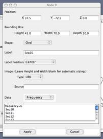

TCS 1.21
(30 June 2005)
2000-2005 © Mark Clement, Jacob
Derington (Brigham Young University, USA)
Steve Woolley (Washington
University, USA) and David Posada (University of Vigo, Spain).
http://darwin.uvigo.es/software/tcs.html
DISCLAIMER
This
program is free software; you can redistribute it and/or modify it under the
terms of the GNU General Public License as published by the Free Software
Foundation; either version 2 of the License, or (at your option) any later
version. This program is distributed in the hope that it will be useful, but
WITHOUT ANY WARRANTY; without even the implied warranty of MERCHANTABILITY or
FITNESS FOR A PARTICULAR PURPOSE.
See the GNU General Public License for more details. You should have
received a copy of the GNU General Public License along with this program; if
not, write to the Free Software Foundation, Inc., 59 Temple Place - Suite 330,
Boston, MA 02111-1307, USA.
HISTORY
Version
1.21 (30 June 2005) Fixed the mapping code to correctly deal with gaps as
defined in the GUI, either as 5th state or as missing (IUPAC ambiguity characters
are treated as missing data)
Version
1.20 (25 June 2005). Fixed "Save Graph". GUI behavior improvement.
Added code to map character substitutions to the branches. Aesthetic changes.
IUPAC warning will appear once
Version
1.19 (23 April 2005): Fixed potential printing bug at TextOutputStream.java. It
should not have affected any result.
Version
1.18 (June 2004): Fixed gapmode, the program was always ignoring gaps (thanks
to Manel Vera). Some code reorganization. Fixed a bug that prevented opening
graph files.
Version
1.17 (May 2004): Fixed bug that prevented PICT or PS output. Small code
reorganization
Version 1-14-1.16 (May
2004): (many fixes were done since the last distributed version; complete
details are given at the beginning of the file dna.java) Fixed a bug that
resulted in incorrect connections in some special cases. Improved the PICT
output format. Removed the nesting option, which was available by mistake.
Allow user the select the confidence level for the parsimony limit. Added
option to automatically select the root (assumes root is the rectangular node).
Improved GUI. The program can read IUPAC symbols and will treat them as missing
data. Fixed other minor bugs
Version
1.13: Fixed bug that was creating several unconnected haplotypes (when they
should be connected). Maybe the same bug we thought we fixed in version 1.12.
Version 1.07-1.12:
Fixed bug that was creating several unconnected haplotypes (when they should be
connected) for some big data sets. The progress of the calculations are showed
in the GUI.
Version 1.06: several
cosmetic changes and some bugs fixed
Version 1.02: outgroup
weights estimation included
Version 1.01: distances
file included
Version 1.00: First
version of the program.
Clement,
M., D. Posada and K. A. Crandall 2000. TCS: a computer program to estimate gene
genealogies. Molecular Ecology 9 (10): 1657-1660.
First of
all, make sure that you have a Java Virtual Machine (JVM) properly installed in
your system. To test your JVM
1) Go to http://javatester.org/version.html
2)
Or in a terminal window, type “java –version”.
The
JVM is included also in:
-
Java Runtime Environment (JRE)
-
Java 2 Platform Standard Edition (J2SE)
More
information on obtaining the JVM in: http://java.sun.com/
To
automatically download the JVM: http://java.sun.com/webapps/getjava/BrowserRedirect
Windows:
The latest version of Java, 1.4.2 works fine
Unix-like:
The latest version of Java, 1.4.2 should work fine
MacOS
X 10.4.1: The latest versions of Java, 1.4.2_07 or 1.5.0_02 work fine.
After
Java is properly installed, to run TCS you should not have to do nothing other
than decompress the compressed distribution files. Just use the executables
file in the bin folder. Do not change the location of the different files within
the program folder.
Suggestion
(from Christoph Held) for Windows:
1)
Create a directory somewhere you like and name it e.g. "TCS".
2)
Unzip the content of the file you have downloaded to this directory
(tick
the option "use folder names" or similar in your zip program to
maintain
the directory structure of TCS. No further installation steps
are
needed.
3)
Inside the directory you have created you will find a "TCS1.19"
sub-directory.
To get TCS to run, double-click on the file "TCS1.19.jar"
inside
this subdirectory. (The numbers in the pathname will probably
change
in future versions, but you get the idea.)
4)
If all that happens is that a zip program window popping up, you will
have
to deactivate the association of the "*.jar" filetype with your ZIP
Program
in its options tab.
TCS
is a
computer program that implements the estimation of gene genealogies from DNA
sequences as described by (Templeton et al. 1992). This cladogram
estimation method is also known as statistical parsimony. Some useful
references are indicated below.
Limits
of parsimony (estimated/user defined)
The
probability of parsimony (as defined in Templeton et al. [1992], equations 6, 7, and 8) is
calculated for DNA pairwise differences until the probability exceeds, by
default, 0.95. The number of
mutational differences associated with the probability just before this 95%
cutoff is then the maximum number of mutational connections between pairs of sequences
justified by the "parsimony" criterion. The user can set up a
different cutoff, from 90% to 99%. Alternatively, the exact limit (i.e., the
number of differences) can be set by the user (see Figure 1).
TCS
calculations for the probability of parsimony are only for DNA sequence data.
If your data is RFLPs you might think you could input absolute distances, but
that would not work. The problem is that for each pair of RFLP haplotypes, the
parsimony connection limit could be different, depending on the number of shared
sites. This is because for RFLPs the total number of characters minus the
number of characters with a different state does not necessarily equal the
number of shared characters (which is true for DNA sequences). The difference
with DNA sequences is that ++ is a shared site, while -- is not a shared site.
But you could build an RFLP network by hand.
PROGRAM
FILES
The TCS
software works with aligned nucleotide sequence. It opens DNA alignment files
in either Nexus [Maddison, 1997 #2791] or PHYLIP (Felsenstein 1991) sequential format. Alternatively, absolute distance files in modified NEXUS or PHYLIP files can also be
used.
Sequences
do not need to be collapsed into haplotypes, as frequency data can be
incorporated into the output. The
program collapses sequences into haplotypes and calculates the frequencies of
the haplotypes in the sample.
These frequencies are used to estimate haplotype outgroup probabilities,
which correlate with haplotype age (Donnelly and Tavaré 1986; Castelloe and Templeton 1994).
Some
examples:
This
is sequential NEXUS:
#NEXUS
Begin
data;
Dimensions
ntax=4 nchar=6;
Format
datatype=nucleotide gap=- missing=? ;
Matrix
Seq1 AAAAA-
Seq2 AAAAC-
Seq3 AAAAA?
Seq4 AAAAAA
;
End;
and
this is sequential Phylip:
4
6
Seq1
AAAAA-
Seq2
AAAAC-
Seq3
AAAAA?
Seq4
AAAAAA
An
option exists to read a matrix of absolute distances among HAPLOTYPES. The
matrix should be LOWER DIAGONAL in NEXUS (example_dis.nex) or PHYLIP
(example_dis.phy) format.
IMPORTANT:
you have to add the "nchar" to these files, so the 95% connection
limit can be calculated. Look a the example files:
#NEXUS
Begin
taxa;
Dimensions
ntax=10;
Taxlabels
Seq1
Seq2
Seq3
Seq4
Seq5
Seq6
Seq7
Seq8
Seq9
Seq10
;
End;
Begin
distances;
Format
triangle=lower labels nodiagonal;
Matrix
Seq1
Seq2 2
Seq3 2 2
Seq4 3 3
3
Seq5 4 4
4 3
Seq6 4 4 4 3 2
Seq7 3 3
3 2 1
1
Seq8 4 4
4 3 2
2 1
Seq9 3 3
3 2 3
3 2 3
Seq10 2 2
2 1 2
2 1 2
1
;
End;
10
404
Seq1
Seq2 2
Seq3
2 2
Seq4
3 3 3
Seq5
4 4 4
3
Seq6
4 4 4
3 2
Seq7
3 3 3
2 1 1
Seq8
4 4 4
3 2 2
1
Seq9
3 3 3
2 3 3
2 3
Seq10 2 2
2 1 2
2 1 2
1
Each time
that the TCS analysis is performed, a log file is saved (*.log). This file contains information
on the run: probabilities of parsimony for mutational steps, the pairwise
absolute distance matrix, a test listing of connections made and missing
intermediates generated, outgroup weights for each haplotype, a graph
description, and the date and time elapsed for the analysis.
Each time that the TCS analysis is performed, a graph file
(GML format) is saved. The name of this file will be *.graph. This graph can be opened later in
TCS, where it can be modified and saved again.
1. Open
the DNA data file in the File menu
2. Click
on RUN
3. The
program reads the file and collapses sequences to haplotypes
4. An
absolute distance matrix is then calculated for all pairwise comparisons of
haplotypes.
5. The
parsimony connection limit is calculated. Alternatively, this limit can be set
up by the user (see Figure 1).
6. These
justified connections are then made resulting in a (by default) 95% set of
plausible networks (1 or more)
7. A graph is generated and automatically opened. In this
graph, haplotypes are drawn in a size proportional to their frequency.
Showing changes
By clicking on the button “show changes” the program will
display changes across branches. Ambiguous assignations will show an asterisk
(*) before the site number.
The exact location of a change along branches of length
> 1 is at random.
You
can select (by clicking), create and delete nodes (haplotypes) o branches on
the graph. Automatic algorithms to order the graph are available in the menus.
You can move the nodes and branches around and save the file as GML (this
format will be recognized by TCS later, if you want to edit further the graph)
or as postscript or PICT file. By double-clicking on a haplotype node, you will
be able of displaying its frequency and its outgroup weight. The haplotype in a
square has the biggest outgroup weight.
The graph is printed by being saved as a postscript file
and sent manually to the printer or as a PICT file. In MacOS X the Grab tool
can be easily used to obtain a TIFF file of the corresponding portion of the
screen.
The program can handle a reasonable number of
sequences. For example, an HTLV
data set with 69 haplotypes of length 725 bps took over one hour to run in a
Macintosh G3. Memory requirements
are low, and the program will run with less than 1 MB RAM.
Figure
1. The TCS interface

Figure
2. Node information. This is the information displayed when double-clicking on
node “Seq10” in Figure 1.
CAVEATS
There
are some things that the user of TCS needs to be aware of:
Treatment
of Gaps (5th state / missing data)
By
default, gaps are counted as events (i.e. treated as a fifth state). You can
turn off this option in the program interface (Figure 1) so gaps are treated as
missing data.
When
collapsing sequences to haplotypes, missing data may create some problems when
the sequence only differ at missing or ambiguous characters. Missing data may
create some paradoxes ins such cases, and the order of the sequences may change
the results of the collapsing.
1
TGGA?AAAAAAACT
2
TGGAAAAAAAAACT
3
TGGACAAAAAAACT
It
is not easy to decide whether we have 2 or 3 haplotypes. Moreover, in this data
set, TCS will say that there is 1 haplotype ... why?... well, the way TCS works
is by comparing each pair in order
1-2
= 0
1-3
= 0
therefore,
there is just 1 haplotype with a frequency of 3. However if we change the order
of the sequences:
2
TGGAAAAAAAAACT
1
TGGA?AAAAAAACT
3
TGGACAAAAAAACT
and
compare again each pair in order:
2-1
= 0
2-3
= 1
Therefore,
there are two haplotypes, one with a frequency of two (=2+1) and the other with
frequency one (=3). Given the length of the sequences that people is using today,
this situation will be really uncommon. Anyway TCS should warn you in such
cases.
Be
aware, if you have several unconnected subnetworks, TCS will not spread those
automatically. If you have overlapping haplotypes, you have to move then around
using the mouse. Nothing should overlap.
Credits
Many thanks for many users reporting potential bugs and
providing suggestions.
For graphic purposes, TCS uses the freeware VGJ 1.0.3,
distributed under the terms of the GNU General Public License, Version 2), is
packaged within the TCS program.
http://www.eng.auburn.edu/department/cse/research/graph_drawing/graph_drawing.html
TCS uses the BrowserLauncher version 1.4b1 class by Eric Albert
USEFUL
REFERENCES
Castelloe, J. and A. R. Templeton 1994. Root probabilities
for intraspecific gene trees under neutral coalescent theory. Mol. Phylogenet.
Evol. 3:
102-113.
Clement, M., D. Posada and K. A.
Crandall 2000. TCS: a computer program to estimate gene genealogies. Molecular
Ecology (in press):
Crandall, K. A. 1994. Intraspecific
cladogram estimation: Accuracy at
higher levels of divergence. Syst. Biol. 43: 222-235.
Crandall, K. A. 1995. Intraspecific
phylogenetics: Support for dental transmission of human immunodeficiency virus.
J. Virol. 69:
2351-2356.
Crandall, K. A. 1996a. Multiple
interespecies transmissions of human and simian T-cell leukemia/lymphoma virus
type I sequences. Mol. Biol. Evol. 13: 115-131.
Crandall, K. A. 1996b. Multiple
interspecies transmissions of human and simian T-cell leukemia/lymphoma virus
type I sequences. Mol. Biol. Evol. 13: 115-131.
Crandall, K. A. and A. R. Templeton
1996. Applications of intraspecific phylogenetics. Pp. 81-99. in P. H. Harvey, A. J. Leigh Brown, J. Maynard Smith and S.
Nee, eds. New Uses for New Phylogenies.
Oxford University Press, Oxford, England.
Crandall, K. A., A. R. Templeton
and C. F. Sing 1994. Intraspecific phylogenetics: problems and solutions. Pp.
273-297. in R. W. Scotland, D. J. Siebert and D. M.
Williams, eds. Models in Phylogeny Reconstruction. Clarendon Press, Oxford, England.
Donnelly, P. and S. Tavaré 1986.
The ages of alleles and a coalescent. Adv. Appl. Prob. 18: 1-19.
Felsenstein, J. 1991. PHYLIP:
Phylogenetic Inference Package. 3.4. University of Washington, Seattle, WA.
Templeton, A. R. 1995. A cladistic
analysis of phenotypic associations with haplotypes inferred from restriction
endonuclease mapping or DNA sequencing.
V. Analysis of case/control sampling designs: Alzheimer's disease and
the apoprotein E locus. Genetics 140: 403-409.
Templeton, A. R. 1998. Nested clade
analyses of phylogeographic data: testing hypotheses about gene flow and
population history. Molecular Ecology 7: 381-397.
Templeton, A. R., E. Boerwinkle and
C. F. Sing 1987. A cladistic analysis of phenotypic associations with
haplotypes inferred from restriction endonuclease mapping and DNA sequence
data. I. Basic theory and an analysis of alcohol dehydrogenase activity in Drosophila. Genetics 117: 343-351.
Templeton, A. R., K. A. Crandall
and C. F. Sing 1992. A cladistic analysis of phenotypic associations with
haplotypes inferred from restriction endonuclease mapping and DNA sequence
data. III. Cladogram estimation. Genetics 132: 619-633.
Templeton, A. R., E. Routman and C.
A. Phillips 1995. Separating population structure from population history: a
cladistic analysis of the geographical distribution of mitochondrial DNA
haplotypes in the Tiger salamander, Ambystoma tigrinum. Genetics 140: 767-782.
Templeton, A. R. and C. F. Sing
1993. A cladistic analysis of phenotypic associations with haplotypes inferred
from restriction endonuclease mapping. IV. Nested analyses with cladogram
uncertainty and recombination. Genetics 134: 659-669.
Posada
D, Crandall KA (2001) Intraspecific gene genealogies: Trees grafting into
networks. Trends Ecol Evol 16:37-45
David Posada
July
1, 2005
dposada@uvigo.es